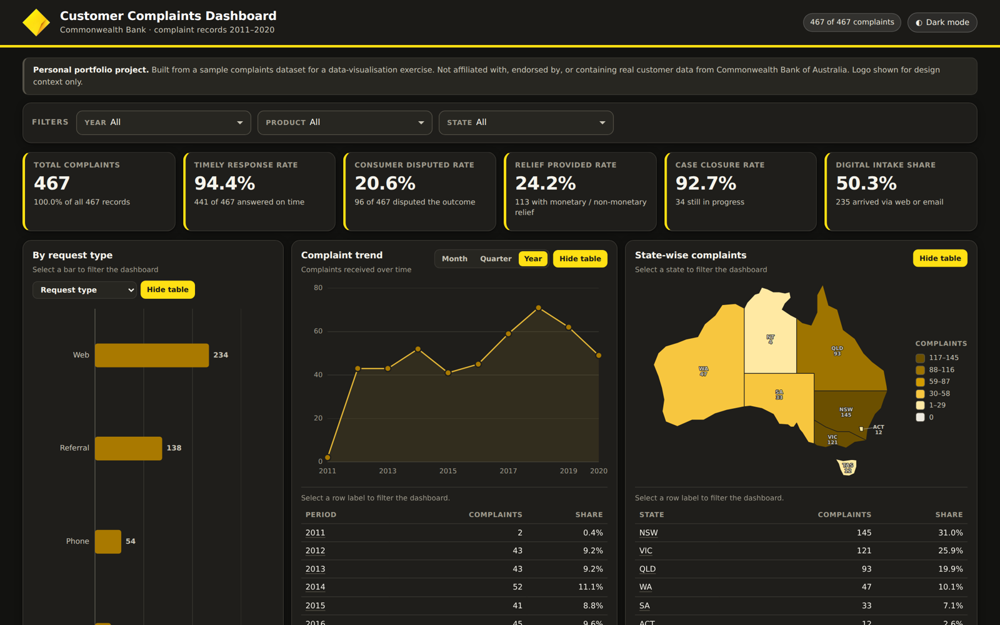

SQL · Data Analysis · Dashboard
Customer Complaints Dashboard
Ten years of banking complaints — 467 records — cleaned, modelled and turned into six KPIs and four linked views. Where complaints come from, whether they are resolved well, and what changed over time.
467
complaints
10 yrs
2011–2020
6
KPIs tracked